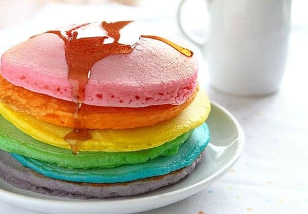

Rainbow Pancakes
Description
These colorful pancakes look like the rainbow and taste delicious! All you need is some food coloring and the best pancake recipes to start your day with some beauty!
Ingredients
- 1 cup all-purpose flour
- 2 tablespoon granulated sugar
- 2 teaspoon baking powder
- 1 teaspoon salt
- 1 egg beaten
- 1 1/4 cup milk
- 2 tablespoon vegetable oil
Steps
- In a large bowl, mix flour, sugar, baking powder, and salt.
- Pour in milk, egg, and oil and mix until smooth.
- Pour the batter onto the heated griddle, using approximately 1/4 cup for each pancake.